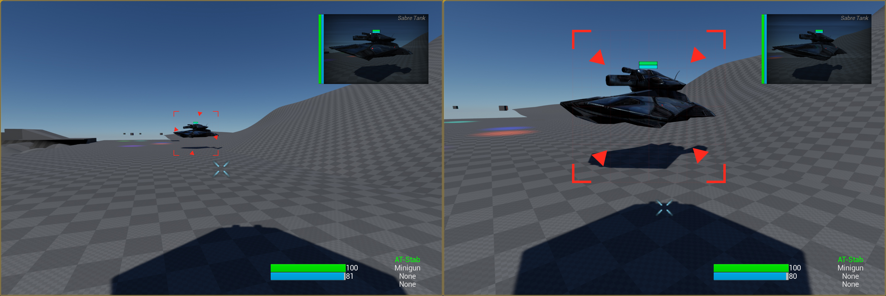
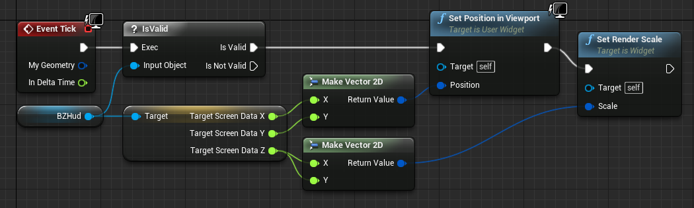

Get Screen-Size Bounds of An Actor
Overview
In this tutorial I'll show you how you can get a float variable of any objects size on-screen. This has a number of useful applications, for example: scaling a UMG widget to match the size of an object. The images below show the same object at two different distances, and the same widget is being scaled per-frame to keep the object inside the widget.

The Code
MyPlayerController.h
public:
UFUNCTION(BlueprintPure, Category = "Hud")
float GetObjectScreenRadius(AActor* InActor);
MyPlayerController.cpp
#if WITH_EDITOR
/* Get Screen Percentage */
static const auto CVarScreenPercentage = IConsoleManager::Get().FindTConsoleVariableDataFloat(TEXT("r.SCreenPercentage"));
#endif WITH_EDITOR
float AMyPlayerController::GetObjectScreenRadius(AActor* InActor)
{
float ScreenRadius;
int32 Width, Height;
FVector Viewlocation;
FRotator ViewRotation; // Not Used, but required for Function call
float CamFOV = 90.0f; //TODO: Replace With Function that returns camera FOV
#if WITH_EDITOR
float ScreenPerc = CVarScreenPercentage->GetValueOnGameThread() / 100.0f;
#endif WITH_EDITOR
/* Get the size of the viewport, and the player cameras location. */
GetViewportSize(Width, Height);
GetPlayerViewPoint(Viewlocation, ViewRotation);
#if WITH_EDITOR
/* Factor in Screen Percentage & Quality Settings */
Width *= ScreenPerc;
Height *= ScreenPerc;
#endif WITH_EDITOR
/* Easy Way To Return The Size, Create a vector and scale it. Alternative would be to use FMath::Max3 */
float SRad = FVector2D(Width, Height).Size();
/* Get Object Bounds (R) */
float BoundingRadius = InActor->GetRootComponent()->Bounds.SphereRadius;
float DistanceToObject = FVector(InActor->GetActorLocation() - Viewlocation).Size();
/* Get Projected Screen Radius */
ScreenRadius = FMath::Atan(BoundingRadius / DistanceToObject);
ScreenRadius *= SRad / FMath::DegreesToRadians(CamFOV);
return ScreenRadius;
}
Pre-Processor Explanation
If you're new to C++ you're probably wondering what the #if WITH_EDITOR and #endif WITH_EDITOR lines are doing. These are pre-processor commands, and tell the compiler to not include these lines of code if we're building a packaged version of our game.
The reason for their existence here, is that the Scalability settings are not safe to call without the editor (since they don't exist), meaning your code will assert . The preprocessor commands will safeguard against it.
How To Use It
In my use-case I have used the size of the object as a scale for an Image component inside a UMG widget. Simply set the images 'Size X' and 'Size Y' values to 1.0 Although it will appear miniscule in the UMG editor, it will scale correctly when we use it in-game thanks to the code in the Blueprint (see below).
For the use-case in the image below, I have packed the Objects Location (Using GetWorldLocationAsScreenPosition) and it's Screen-Size from the code shown above, into a single vector in the players HUD. When the widget is created by the HUD, I set the 'BZHud' variable to the same HUD.
Using Event Tick in the UMG Widget, I then use that to set the widgets position and size in the view-port.

Hope this helps!
( )